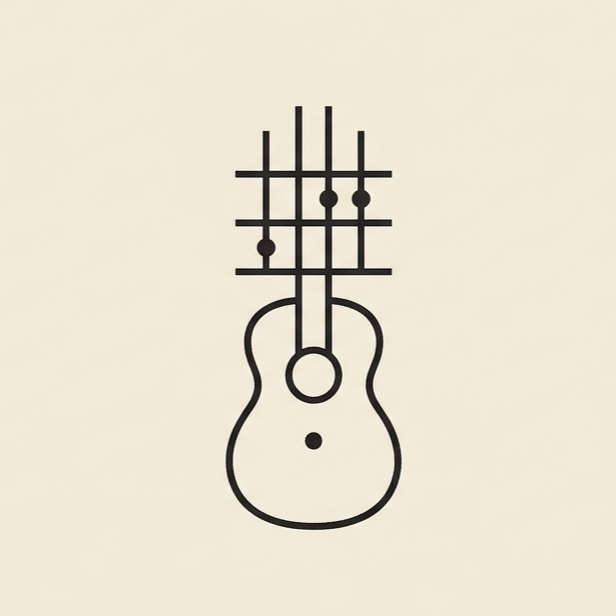

From first-year open chords to the voicings that defined jazz, blues, and beyond. Every shape your fingers could ever need.
Every voicing. Every key. Every variation.
These eight chords will unlock hundreds of songs. Start here.
hi gng, anurag this side.
i just be coding whatever pops into my head fr.
some projects valid, some straight useless but they look hard so idrc.
into guitars, films, clean ui and staying awake for no reason fixing one tiny bug.
just here making stuff and seeing what sticks.
Built AnGuiter from scratch because no chord reference felt right.
Codes by feel, plays by ear, ships when it looks cinematic enough.